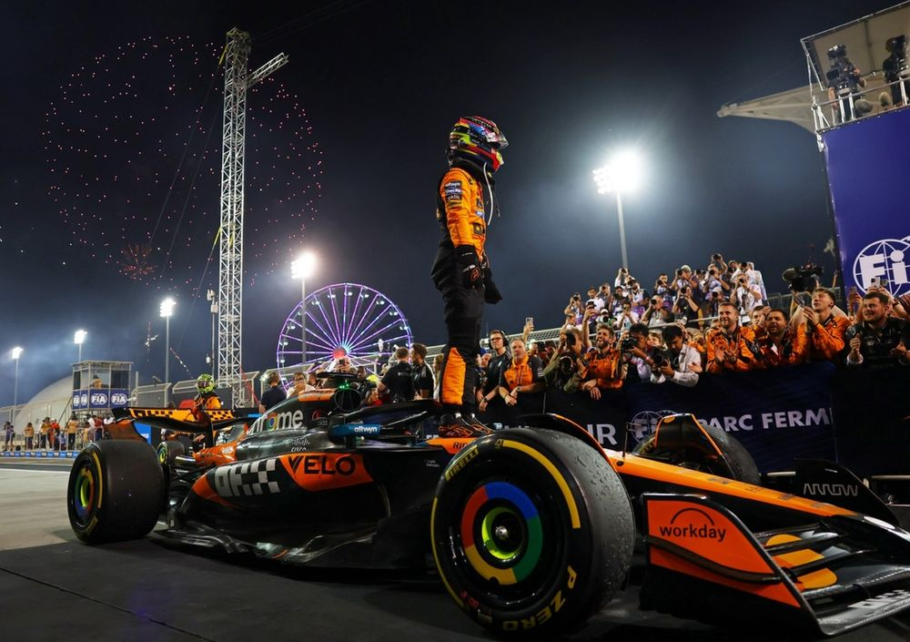
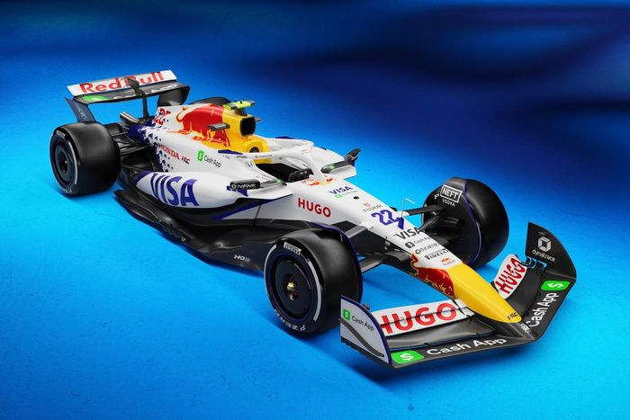
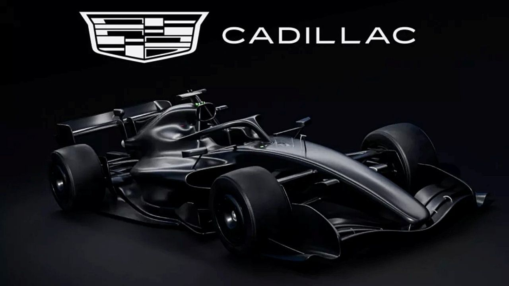

Mi Piloto Favorito es:
Actualmente mi piloto favorito es Oscar Piastri, ya que Checo Pérez no se encuentra activo este año en ningún equipo.
Este ha sido considerado el diseño más bonito de la parrilla actual 2025 por los fanáticos, su nombre es Racing Bull VCARB.
Esta marca de coches llamada Cadillac ha ingresado para la próxima temporada 2026.
Circuitos Míticos
- Spa-Francorchamps
- Monza
- Mónaco